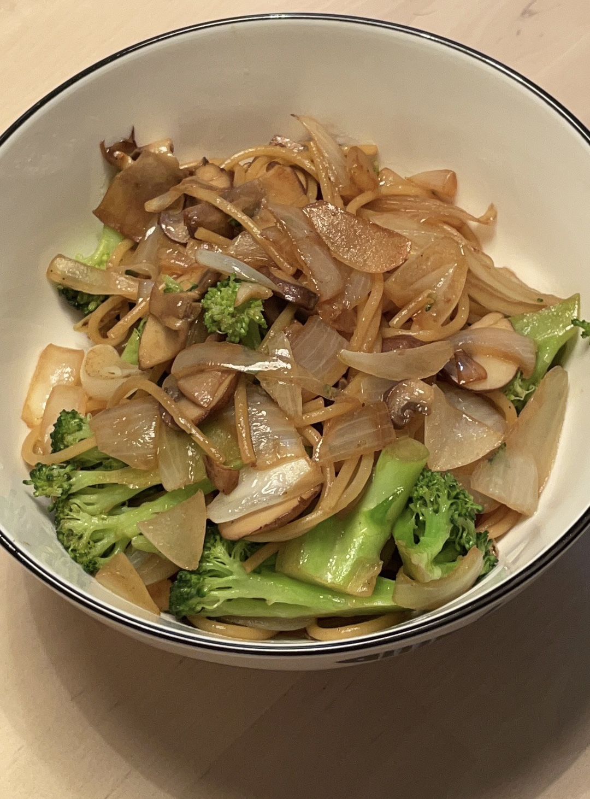

Stir-Fried Pasta With a Lot of Vegetables

Description
Pasta with vegetable!!! Filling and nutritious!!!
Ingredients
- Pasta (as much as you want, I have yet to cook the perfect amount for myself it's always either too much or too little)
- Vegetables that you like! Recipe will use:
- Salt
- Soy sauce
- Olive oil
Steps
- Boil water in pot
- While waiting for water to boil, cut all vegetables to biteable sizes
- Heat wok
- Add oil
- Water is probably boiling by now, add pasta to pot and cook for like 10 mins
- Put onion and mushroom in wok
- Stir stir
- Add broccoli and stir stir
- Add salt and stir stir
- Simmer time, add water and put that lid on
- Stir the pasta every so often whenever you feel like it
- Pasta is probably cooked now, take out and toss in oil
- Add pasta to stir fried veggies
- Toss and stir and add soy sauce
- Hope the pasta doesn't stick to bottom of wok :(
- Serve and hope it doesn't taste like dish soap again